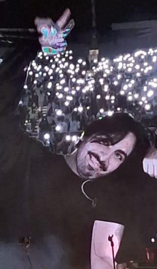
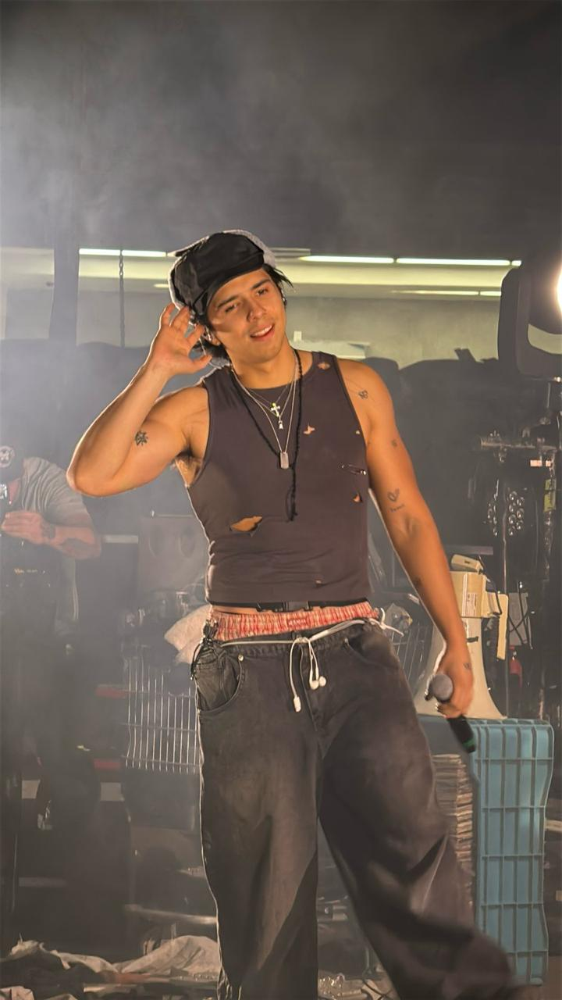
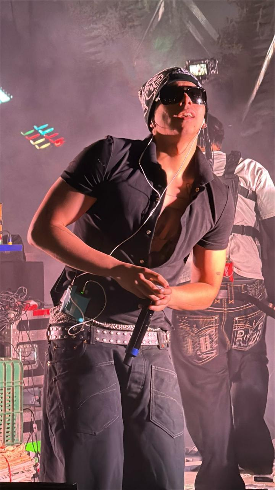

Integrantes
Mike

Productor musical y músico.
Milton

Compositor y cantante del grupo.
Emilio

Compositor y cantante del grupo.
Miguel de la rosa mejor conocido como Mike, con 25 años es el hermano mayor, comenzó cuando tenía 13 años a hacer pistas en una vieja computadora que hoy ya parecen de museo y actualmente es el productor de Latin Mafia.
Milton de la Rosa integrante del grupo mexicano Latin Mafia, tiene actualmente 23 años y es uno de los vocalistas gemelos de Latin Mafia.
Emilio de la Rosa, integrante del grupo mexicano Latin Mafia, tiene actualmente 23 años y es uno de los gemelos vocalistas del grupo.
Debut
En abril de 2024 Latin Mafia hizo su debut, actuando en Coachella elevando su perfil como uno de los "mejores actos de México sin sello ni álbum". Además, tenían programadas actuaciones en festivales de música como Lollapalooza Argentina, Lollapalooza Chile, Estéreo Picnic de Colombia,y Tecate Pa'l Norte. Según Music Metrics Vault, hasta el 10 de abril de 2025, el grupo había alcanzado casi 1.4 mil millones de reproducciones.